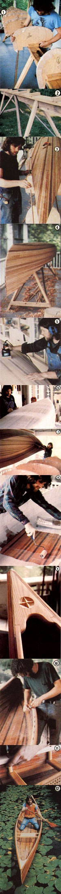
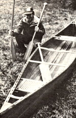

MOM's boatmaker learned that labor and love are required when one tackles the task of...
"I do not recall ever seeing a properly designed boat that was not also a beautiful boat. Purity of line, loveliness, symmetry-these arrive mysteriously whenever someone who knows and cares creates something that is perfectly fitted to its work .... Nobody styled the orb web of a spider, nobody styled the . . . canoe. Both are beautiful, and for a common reason: each was designed to perform a special task under special conditions."
A good canoe, cleanly cleaving a glassy lake or haystack wave as it transports its passengers in silence and harmony with the outdoors, has a functional beauty that's unsurpassed by any other of the tools that connect humanity with the natural world. And surely the finest examples of such a craft's ability to combine utility and loveliness are found in handmade wooden canoes. While the boats may not withstand the mishandling that aluminum or plastic vessels can tolerate, their fluid grace sometimes lets them seem almost a part of the water . . . and, if treated with care, they can prove surprisingly durable.
In this day and age, though, the beautiful canoes-at over $1,600 apiece-are pretty damned expensive! The folks at MOTHER hated to think that less-than-wealthy paddlers would be limited to dreaming about such elegant craft, so we set about learning what it's like to build a wooden canoe. We selected the strip construction technique (which produces a boat consisting of long, thin wooden slats that are fiberglassed-inside and out-for extra strength), since it's the best method for novice boatbuilders to attempt. And to make matters easier still, we decided to work from a quality kit manufactured by the very reputable Old Town Canoe Company.
Once we'd received our order (in an assortment of boxes, one of which was 20 feet long!), we had to hunt up someone who could spare the time to put it together . . . and decided on a warmhearted itinerant woodworker named Peter Webb. As a parttime staffer from the end of April to the beginning of June 1981, Peter built the impressive boat you see pictured here. We'd like to share Mr. Webb's experiences-adding a few words of advice of our own-to acquaint you with the intriguing process of boatbuilding and to help you decide whether, perhaps, you might one day want to create a "stripper" yourself.
BUILDING THE STRONGBACK
The Old Town cedar strip canoe kit contains all the necessary wood (including dozens of varicolored cedar strips, a spruce inwale and mahogany outwale, and the ash decks, stems, seats, and thwarts), along with brass hardware and precut pieces of fiberglass cloth . . . but Peter did have to round up lumber for his canoe mold, resin and hardener for fiberglassing, and an assortment of standard hardware and shop tools. He also, wisely, spent a number of hours;-before he set to work-reading the instructions in Old Town's fine building manual, How to Build the Cedar Strip Canoe, as well as those in David Hazen's classic text, The Stripper's Guide to Canoe-Building.
Webb's first actual construction project involved erecting the shaping mold around which the boat would be built. This assembly consisted of a giant 15' sawhorse known as the strongback, several precut-roughly semicircular-pieces called formers that define the inverted outline of the boat, and two quarter-circle plywood sections used to shape the boat's ends. (Peter worked with an early version of the Old Town kit and thus had to make his own plywood formers, using patterns provided by the manufacturer . . . a straightforward trace-and-cut procedure. The canoe company's current kit includes 13 precut formers.)
Constructing the strongback . . . marking the exact locations for the formers and stem ends . . . attaching these curved sections . . . and making sure (and double sure) that every piece was perfectly aligned and leveled were steps that had to be taken with great care, since the completed mold determines the shape of the finished canoe. With that in mind, Peter spent 17 full hoursover a period of four days-erecting the skeletonlike structure. And when he was done, he checked the curve of the boat-to-be's lines by holding some cedar strips at various places around the form. Then he detached the sections of the end formers that would actually become part of the boat's stems, inscribed a confident "LOOKS GOOD!" in the project journal he kept, and began the next step . . .
STRIPPING THE BOAT
Mold building had been partly an exercise in imagination, since Peter was then constructing something that would define, but would not be part of, the finished craft. However, "stripping", the actual laying on of the beautiful thin cedar pieces that constitute the body of the vessel, offered him the special satisfaction of seeing-line by line-a canoe take form. It was a slow but eminently rewarding step, and Peter-a conscientious craftsman if ever there was one-obviously reveled in it. (His journal even declares that "working with cedar is an olefactory delight"!)
Peter's basic procedure for laying a strip was to staple a board into position against the formers, lay a thin bead of glue along one edge of the thin plank, and then staple the next strip alongside. Following the advice given by Hazen in The Stripper's Guide, Webb built the floor of the canoe first. And since a canoe is naturally much wider along its middle than at its ends, most of the strips that made up the boat's base did not run the full length of the craft but had to be cut and shaped to fit. It took Peter two full days to lay, staple, glue, and trim the football-shaped bottom section. Then he began fitting-beveling a strip's edge when necessary-and fastening the beautiful full-length pieces that run from the vessel's floor to its gunwales and form the sides of the craft.
To make the canoe's ends higher than its midpoint, Webb added some additional short strips on both sides of the bow and stern. Next, he removed the staples and plugged the few small gaps between the strips with a mixture of cedar shavings and glue. (This step wasn't essential-since the to-be-added inner and outer layers of fiberglass would actually seal the boat against leaks-but it did make the craft more handsome.) Following that, our canoemaker trimmed the strips to points at the boat's ends and sides, and then attached and shaped the ash strips that form the craft's exterior stems.
All told, stripping required about 30 slow-but pleasurable-hours of Peter's time. However, his next job was one of the most tedious tasks in the entire boatbuilding operation . . .
SANDING
It took Peter a while to determine the most efficient way of smoothing the outside of the canoe. (Two entries in his journal serve to illustrate the learning process. "5/6: Trip to town to get sander belts, paper, etc. Immediately evident , once I got back, that a wood-gouging belt sander is not the way to go! . . . 5/7: Trip to town to purchase vibrator sander.")
Many hours and sheets of sandpaper later, MOM's woodworker had the hull smoothed. He could now steel his nerve and prepare to perform the nonwoodworking stage of the operation, namely . . .
FIBERGLASSING
Peter knew that laminating the interior and exterior of the boat's hull would be a key strength-giving step. (Indeed, it's pretty much the key that enables an inexperienced canoe crafter to construct a usable wooden boat. The other option-which was used in the old birchbark and wood-and-canvas canoes-is to reinforce the boat with hardtomake internal ribs.) But Webb wasn't looking forward to the job. He was certain that saturating a synthetic cloth with potentially toxic chemicals wouldn't be either a romantic or a sensuous task.
Nonetheless, as our boatbuilder found out, a novice-working with a partner and following the instructions of either Hazen's or Old Town's guide-can safely do a perfectly decent job of fiberglassing a canoe. The procedure consisted of laying a cross-grained white cloth (it becomes transparent when it's treated) in position on the hull, mixing a few small drops of catalyzing hardening compound into a liquid polyester resin, and then thoroughly soaking the plastic cloth with the resin/hardener before the chemical mix has time to "set up". The result was a clear, hard shell that actually highlighted the beautiful lines and colors of the stripped boat.
Working with an assistant, Peter encountered only one difficulty during this task: Some unattractive rough cloth edges were still discernible after glassing. So Webb donned a respirator and sanded out the rough spots until the entire hull was smooth. He didn't enjoy this repair job (his journal notes, "I don't care how insouciant you are . . . there's no way to feel good about working with fiberglass!"), but his painstaking labors made a noticeable difference in the shell's beauty.
Finally, after Peter had coated the hull with three more layers of resin (the last one contained a protective exterior wax), he was ready for one of the more dramatic moments of the boatbuilding process . . .
FLIPPING THE CANOE
Pulling the craft off its shape-holding formers was definitely a cause for tension . . . it was impossible for Peter not to harbor a slight fear that the unfinished canoe would collapse as soon as it came off the strongback.
But she held, matey, she held! True, the sides were still pretty wobbly, but Webb was able to rejoice in having created an honest-to-goodness canoe shell. After enjoying that brief moment of pride, Peter nestled the vessel-right side up-on two padded sawhorses and started the work of . . .
SANDING AND GLASSING THE INTERIOR
The tight spaces and concave curves of the canoe's interior made sanding that surface a bit more difficult than smoothing the vessel's hull had been. Peter used a hand plane, a half-round rasp, the vibrator sander, and even hand-held sheets of sandpaper to smooth out the cedar. The job required a full 12 hours of labor.
Then-because his part-time assistant was off backpacking and the eager builder just couldn't wait to get on with the project-Webb made a critical mistake: He tried to fiberglass the interior by himself. This task was especially difficult because the tightly laid cloth tended to pull off the bottom during drying (rather than lie flat as it naturally did on the outside of the hull) and create unsightly bubbles. (Peter's journal for the day reflects his troubles. "5/28: A sticky, messy, frustrating, time-consuming task. The guidebooks must recommend having help on this job so that another body can temper your anger and frustration at the *#!@ glass!")
Worse yet, Webb came back the next morning and learned that he'd actually made another mistake: He had done the work on a very humid day, so the resin hadn't dried well .. . and more mottled splotches had sprung up in the canoe overnight. The disheartened canoemaker tried to push and resin the bumps back down, but (worst yet) returned the next morning to find the cloth more ripply than ever!
That was that. Peter yanked all the fiberglass off, bought some new cloth, and busied himself with trim work until his assistant came back. Then the two of them-on a dry, sunny day-mixed up a "hot" (that is, quick-setting) batch of resin/hardener and fiberglassed the inside in just an hour! (Webb's journal for the date admits, "Two people make the job go much easier and faster. Boat looks 300% better than last time. There're still a few nasty bubbles that I'll have to grind down and recoat, though.")
Finally, to Peter's great relief, it was time to get back to woodworking again and tackle the downright pleasurable job of...
ADDING THE BOAT'S TRIM
After screwing the two tiny ash decks in place, Peter shaped, resined, and clamped the spruce inwale and mahogany outwale in position. He permanently secured each two-part gunwale with 29 countersunk brass screws, then installed the boat's seats (which are hung below the canoe's inwales on ash dowels that have long brass bolts inside them) and thwarts. Webb then set all the crosspieces in the locations recommended by the Old Town guidebook . . . except for the center thwart, which he placed four inches back from midship to serve as a solo paddling rest. Peter found these straightforward trimming jobs all perfect delights, particularly since the addition of each beautiful rail, deck, thwart, and seat added to the looks-as well as to the strength-of the boat. With them all in place, the canoe was ready for final varnishing, drying, and-at last-the long-awaited moment of...
THE LAUNCH
Sleek, stable, and easy both to propel and to steer, the 65-pound cedar strip canoe showed-from its first moments on the water-that it was as graceful in function as in appearance. Anyone watching Mr. Webb paddle the boat-in tandem or solo-could see that as far as the woodworking canoeist was concerned, his 160 long hours of head scratching, measuring, stripping, sanding, and trimming (yes, and even fiberglassing) had been well worth the effort. (Incidentally, photographs of the initial launching of the craft were used in the article "Find Freedom in a Canoe", on page 74 of issue 75.)
CONCLUSIONS
There's no way we can say whether or not you'd want to build a cedar strip canoe yourself, but we can give you a few points that any would-be boatbuilder should consider. First off, if you don't enjoy working on extended projects, forget it. You must be able to find pleasure in the labor of creating a cedar strip craft to make the time and the attention to detail that it demands worthwhile. However, this doesn't mean you have to be a master woodworkerlike Mr. Webb-to complete the project. You should, of course, have some familiarity with the required tools . . . but patience, common sense, and the guidebooks' clear instructions can compensate for a lack of actual boatbuilding experience.
Remember, too, that'a cedar strip canoe is a cruising craft, not primarily for white water use. (Indeed, we find the mere thought of watching such a lovely and laboriously wrought canoe banging around among boulders, perhaps to splinter before our eyes, downright excruciating!)
The final factor to be considered is the price. The Old Town kit goes for $745 delivered, which-while it's less than half of what a premade stripper might cost-is quite a hefty chunk of money. However, it is possible, if you can hunt up a good source of the necessary woods, to make your own boat without a kit and save several hundred more dollars in the bargain (see the accompanying sidebar for the story of some folks who did just that). Either the Old Town or the Hazen guide will tell you most of what you need to know to set out on your own. Actually, we'd recommend that you buy both books: The photograph-packed step-by-step Old Town manual and the detailed option-filled Hazen guide complement each other quite well.
Only you can decide whether you'd enjoy investing the time and energy in creating a strip boat, and whether owning (and maintaining) such a distinctive canoe is right for you. If so, we believe you can find both the building and the boating very worthwhile. We know Peter Webb did. He's already talking about making another cedar strip canoe himself!
EDITOR'S NOTE: The Old Town Canoe Kit is available for $695 plus $50 shipping and handling from Old Town Canoe Kit, Dept. TMEN, 58 Middle Street, Old Town, Maine 04468. The firm's manual can be purchased alone-for $19.95 postpaid-from the same address. (The price of the guide can be deducted from the cost of the kit if you later decide to buy the company's complete package.)
David Hazen's The Stripper's Guide to Canoe-Building is available in many libraries and bookstores, or for $10.95 plus 95 cents shipping and handling-from Mother's Bookshelf(restricted), P.O. Box 70, Hendersonville, North Carolina 28791.
Stripping From Scratch
This past winter, environmental studies professor Alan Haney began planning a month-long wilderness canoeing expedition in Canada for 11 of his students at Warren Wilson College (in Swannanoa, North Carolina). As part of the group's preparations for their summer learning adventure, they decided to build two of the canoes they'd need. And using David Hazen's The Stripper's Guide to Canoe-Building for their manual, the modern voyageurs acquired a pair of boats for only $200 apiece!
How-you may wonder-did Haney's group keep their material expenses so low? Well-for one thing-they bought 6", 8", and 10" cedar boards from a local lumberyard and then used the school's shop band saw to rip the thin strips they needed. (Since the only cedar boards they were able to obtain were all pretty much the same color, they also cut some redwood strips to add visual variety to the boat shells.) The college crafters purchased the mahogany they used for their canoes' gunwales, but they cut their own cherry-for seats and thwarts -from trees on the rural school's property. In addition, they bought inexpensive, slightly "defective" fiberglass cloth . . . caned their boats' seats themselves ... and made some of their own paddles, with oak shafts, cherry grips, and laminated cedar strip blades. As it turned out, then, their biggest cash outlay went for the gallons of polyester resin they needed. That liquid cost more than $100 per boat!
Warren Wilson College's strippers wasted no time in constructing their canoes: They finished the first in just over 100 hours of total work time . . . and their second (since they were able to reuse the original strongback) required a mere 60 hours! The average time investment per boat, then, was only about half the 160 hours MOTHER's boatbuilder needed to make our strip canoe. However, the wilderness-bound group did happen to have an experienced stripper guiding them . . . they could easily call on several hands to speed up production . . . they didn't suffer any setbacks equal to Peter Webb's fiberglassing fiasco . . . and they weren't so concerned with turning out an immaculately crafted product as they were with quickly completing good usable boats. (Unlike Mr. Webb, for instance, the students did use a belt sander, and they put less effort into such beautifying steps as hull sanding, strip fitting, and gap filling.)
Which isn't to say they did less than fine work . . . the students produced lovely, high-quality, and inexpensive cruising canoes. Just as important, though, they gained the worthwhile hands-on experience of building two of the very crafts they'll have to depend on during their month-long wilderness trek.
|
 [1] Formers go on [2] the strongback. [3] The ""football"" base. [4] The untrimmed hull. [5] Sanding. [6] Laying the fiberglass cloth. [7] Flipping the boat. [8] Glassing the interior. [9] The bow deck. [10] Trimming the gunwales. [11] Installing the caned seats. [12] !!! |
 |
|